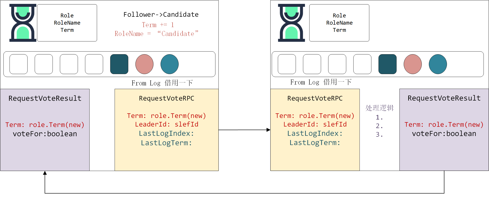
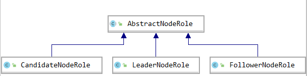
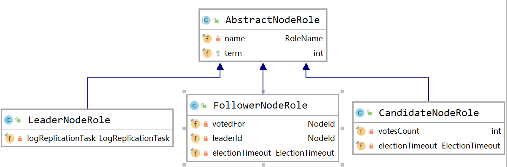

LeaderElection
在之前我们在connector的阶段以及简单使用VoteRequestRPC作为例子来说明底层的网络通信.一节我将详细记录LeaderElection阶段的实现.

Raft要求系统在任意时刻最多只有一个Leader，正常工作期间只有Leader和Followers。Raft算法将时间分为一个个的任期（term），每一个term的开始都是Leader选举。在成功选举Leader之后，Leader会在整个term内管理整个集群。如果Leader选举失败，该term就会因为没有Leader而结束。
Role
在之前的概述中我们大概介绍了Raft算法中节点存在有3个角色。即Leader， Candidate， Follower。并且角色中保存着任期（Term）

Candidate：其中Candidate是最为简单的，因为它只在节点选举阶段短暂存在， 节点的觉大多数时间都是Leader或者Follower。
Leader：接受客户端请求，并向Follower同步请求日志（包括心跳， configChange和普通请求数据），当日志同步到大多数节点上后告诉Follower提交日志。
Follower：接受并持久化Leader同步的日志，在Leader告之日志可以提交之后，提交日志。

ElectionTimeout
从上述UML图中我们可以看到，这里在Follower和Candidate中都已一个electionTimeout字段。ElectionTimeout类中封装了倒计时的Future.
1 | public ElectionTimeout scheduleElectionTimeout(@Nonnull Runnable task) { |
当Follower在运行的时候就会有一个electionTimeout倒计时钟，防止节点长时间没有收到消息。
- 所以当Follower 和Candidate收到来自其他节点的消息的时候都会重置electionTimeout。
- 当超时还没有收到消息节点将会转换为Candidate并发起投票请求。
投票请求（candidate）
问题来了，节点同时启动到底是谁成为Candidate呢。其实electionTimout的倒计时时间每个节点都在在一个范围内取得随机值。谁先触发超时，谁就先成为Candidate并发起投票请求。
1 | changeToRole(new CandidateNodeRole(oldTerm + 1, scheduleElectionTimeout())); |
收到投票请求（members）
当其他节点收到这个投票请求。根据请求的Term和角色进行相应的回复。
1 | // skip non-major node, it maybe removed node |
首先检测是不是我配置文件配置的一家人啊。正所谓不是一家人不进一家门。 不是 不投票（避免新配置的节点干坏事）
再来看看你的任期有没有我的任期大。哟你的任期还没有我的任期高呢 你有什么资格 。 不投票
rpc.getTerm() < role.getTerm()
你的任期比我的高，你是爸爸。 再看看Logindex 呢。 如果logIndex比我的小。 不投票 否则立马成为你的马仔Follower并投票。
当任期相等，需要看看当前我的自己的角色是什么啊。是follower更具index判断投票与否，是candidate 已经给自己投票了。leader肯定久更不会投票了 。
总结一下 ： 节点收到消息之后，给Candidate投票的情况其实就很明确的两种情况
- 节点的任期（Term）小于请求的任期。
- 任期相等的时候，还需要判断下当前节点的角色，本身是Follower，根据logindex来判断是否投票，切换领导。
1 | rpcMessage.getChannel().writeRequestVoteResult(result); |
节点收到消息并且处理完之后肯等就是返回处理结果了。
收到投票结果（candidate）
1 | if (result.getTerm() > role.getTerm()) { |
当candidate收到投票结果之后
- 如果收到的结果中任期（Term） 比自己的高。说明member的任期高，并且没有给我投票的。而且自己遇到了高任期就该立马认怂。成为Follower
- 如果我当前已经不是Candidate了那投票也就没有意义了。
- 查看投票结果
- 如果投票True说明我获取到了当前票。计算我的总票数
- 如果总票数 大于一半 - 成为Leader ——>去做leader该做的事情
- 否则更新自己的票数，继续等待投票
- 如果投票True说明我获取到了当前票。计算我的总票数